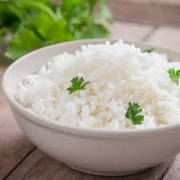

Rice

Description
This is real simple to make and tastes really nice.
Can be eaten with rice, eggs, etc.
Ingredients
- Ripe plantains
- Vegetable oil
- Salt
Steps
- Peel the plantain
- SLice it into long slices or into circles. You could even chop it up into cubes.
- Add some salt
- Put some cooking oil in a pan and let it heat up
- Add the plantain into the oil and allow to fry till it is golden brown
Home